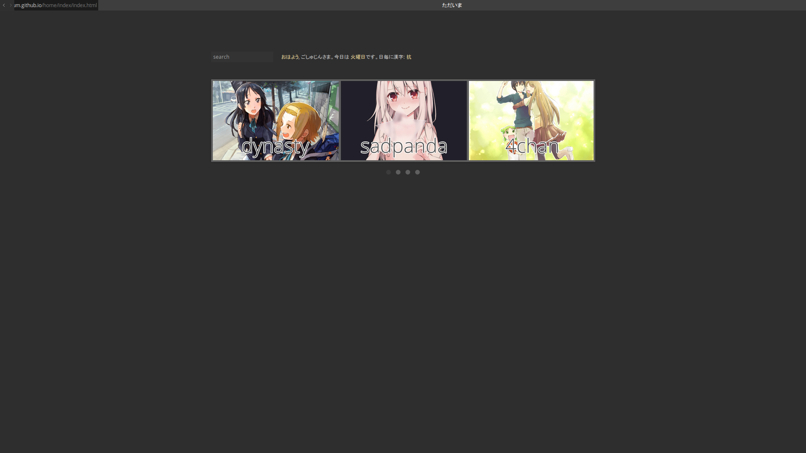

Description
"home" is a startpage that uses images as opposed to text links to bookmarked websites. The one set up can be modified to include other sites (and banners). It comes with a script for the date and a greeting that varies based on the time of day, as well as a kanji of the day.
Installation
Download the .zip and extract it, then set it as your custom home page (start page and/or new tab page). In Firefox, this can be done in about:config or by going to tools > options.
Editing
In order to add/remove sites, you'll have to edit index.html. The format for each site/slide is:
To edit the carousel/slideshow, edit jquery.flexslider.js in /js.
To edit the colors, edit stylesheet.css in the css/stylesheets folder.
To edit the times of day that the greeting changes at/to change the color of the greeting, etc., edit time.js in the scripts folder.
Preview
click image for other times of day
